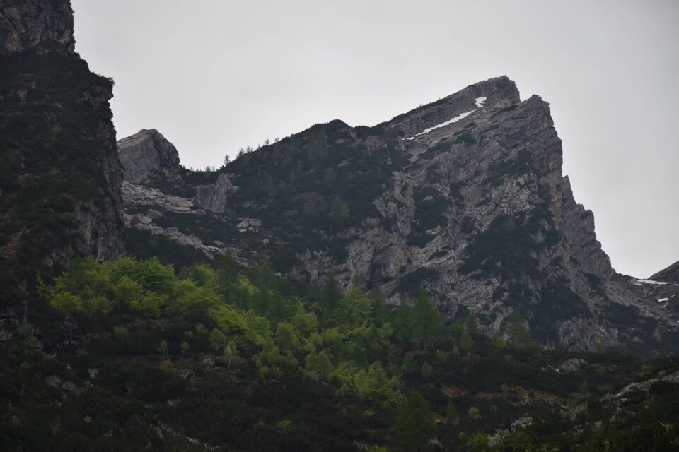
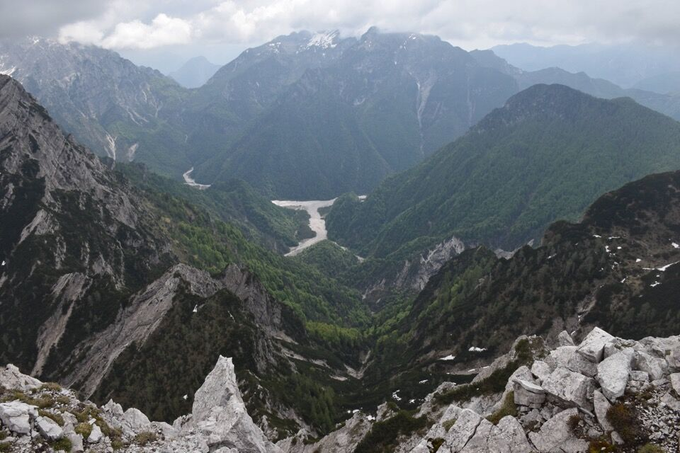

In una giornata dal meteo incerto partiamo dal pont del Gobo in val Settimana alla volta della cima Ciol de Sass: in programma la traversata dalla val Piovìn alla valle del ciol de Sass.
Nella parte alta, ovvero nel bosco di faggi, il troi della val Piovìn è mal messo ma ben omettato. Una volta che si arriva al ciol de val Piovìn conviene salire direttamente per esso o in sx orografica, in quanto non c'è più alcuna speranza di trovare quello segnato sulla tabacco che portava alla casera di val Piovìn.
Ecco la rampa a cui puntare, fra lo Spiz de val Piovìn a sx e la cima Ciol de Sass a dx. Per qualche motivo quasi tutti quelli che ci vanno per la prima volta cannano la salita e finiscono in forcella di val Piovìn...
Arrivati al ciol de val Piovìn decidiamo di continuare fino ai ruderi della casera di val Piovìn, in quanto il ciol è pieno d'acqua: avremmo fatto meglio a continuare in sx orografica, in quanto la traccia verso i ruderi è ormai scomparsa. In compenso abbiamo visto la casera, ed è sempre sorprendente ed emozionante vedere l'opera dell'uomo in luoghi così remoti.
La val Piovìn è un ottimo punto di osservazione verso Turlòn e Pale Candele.

Pale Candele m'attrae e mi ricorda il Dosàip: uno zoccolo di roccia sopra ripidissime pale erbose.
Interessante pure la vista che si ha sulla Punta del Borsàt, con evidenti la Spia dei Camosci e la famigerata placca della normale a Punta del Borsàt. Pochi comunque gli intrepidi che salgono da Sud per il ciol de Méne Borsàt e misterioso passaggio del Bus de Foradòria. La cresta mugosa in basso fa parte del Bosc da Val.
Ad ogni modo dal luogo dei ruderi iniziamo a traversare di nuovo verso il Ciol, alzandoci fino a montare sulla rampa. Molti mughi in questo tratto.
La val Piovìn è delimitata dall'altro lato della valle dalla cima Ciolesàn, le cime Pale de Ciuone e la cima Polsadòr.
Arrivati alla forcella a sud dello Spiz de val Piovìn il panorama si apre magnifico verso il Cornaget. In foto, da sx a dx, le nude cime Settimana-Savalòn, il Cimon delle Tempie, il Cornaget e la Fratta de Barbìn; in primo piano la cima di Pradùs (con un po' di vegetazione) e le cime Prendéra con le loro bellissime lastronate.
Dalla forcella iniziamo a salire verso la cima.
Verso la cima di Pradùs sovrastata dall'immensa mole del Cornaget.
Le belle cime Prendéra.
Ultimo strappo verso la cima.
Greta.
Andrea.
Finalmente in cima!
Ottima vista verso la val Prendéra, nel punto in cui il ciol de la Prendéra confluisce nelle grave da Gere. Si nota bene la forca di Caseràta (sovrastata dal Cuel da la Luna) col massiccio del Dosàip-Pinzat; a dx il Ciampòns.
Il ciadìn dai landres biancs, bel posto dove vorrei andare prima o poi.
Dirimpetta la q2062, detta anche cima Ciolesàn.

In lontananza Merle da On e le quote occidentali delle cime Pale de Ciuone.
Iniziamo a scendere: un ultimo sguardo alla val Piovìn, con l'ardito e fotogenico spigolo dello Spiz de val Piovìn.
Scendiamo direttamente per il ciol e in qualche punto per i mughi in dx orografica. Superiamo un salto del ciol mediante una facile cengia gradinata.
Quando mettiamo piede sull'ex CAI 391 inizia a piovere: la cosa non è da sottovalutare in quanto il ciol si ingrossa subito e l'ultima parte del sentiero passa per il torrente (molti guadi). D'altronde nel ciol di Sass confluiscono tutti i rii del catino sovrastante!

Avvertimento...